Настройка веб сервера Apache + 1С (Пошаговое руководство)
Хоть 1С и не рекомендует использовать веб сервер в файловом режиме (а только в серверном) - тем не меннее для маленьких предприятий с 2-3 бухгалтерами использование веб сервера на новых конфигурациях с "управляемыми формами" (Бухгалтерия 3.0, Зарплата 3.0 и прочее) - позволяет организовать довольно быстрый доступ к базе сетевых компьютеров, даже если они компьютеры эти по сути уже старый хлам. Важно лишь, что бы основной компьютер с базами и веб сервером был приличный (например Core I3, 8 Гбайт оперативки и SSD диск).
Пошаговое руководство по настройке вебсервера 1С на Apache (включая файловый вариант баз данных)
1. Скачиваем установщик Apache
По каким-то причинам все новые версии (например 2.4.25) Apache перестал выкладывать в виде самораспаковывающегося дистрибутива. Для нас вполне приемлемо использовать не самый последний дистрибутив 2.2.25 - позволяющий получить удобный установщик и избежать дополнительных манипуляций.
Скачиваем установщик со страницы официального сайта https://archive.apache.org/dist/httpd/binaries/win32/
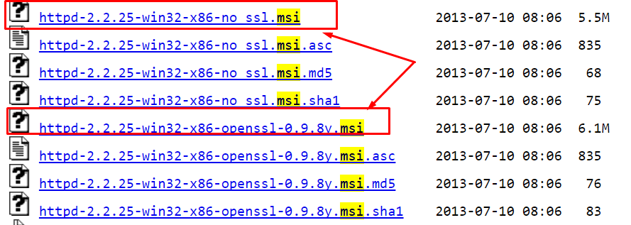
Обращаю внимание - нам удобно использовать именно *.msi установщик
Выбираем “no ssl” дистрибутив, если базы будут открыты только внутри нашей локальной сети или “ssl” дистрибутив, если база будет открываться в интернете. Дополнительно про настройку ssl можно почитать в статье инфостарт 1С + Apache + SSL: почему вы должны использовать SSL (наглядная демонстрация)
В нашем примере будем настраивать сервер без ssl для использования только внутри локальной сети.
2. Запускаем скачанный установщик
Заполняем Network Domain: Localhost, Server name: Localhost
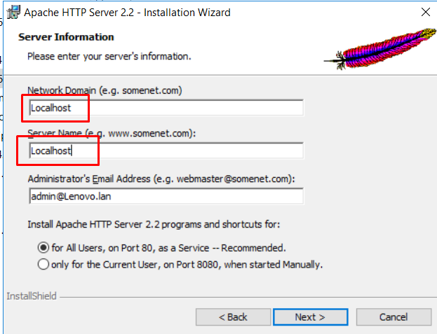
Нажимает NEXT, Setup type: Typical NEXT, NEXT, INSTALL 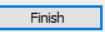
3. Проверяем запустился ли веб сервер
Для этого открываем любой броузер и указываем адрес страницы http://localhost
Мы должны увидеть страничку с надписью It Works !
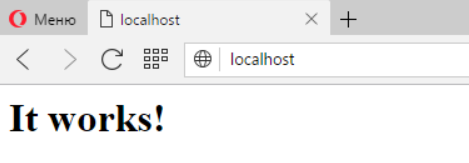
Выясним IP адрес нашего компьютера в локальной сети. Для этого в нижнем правом углу (рядом с часами) находим иконку локальной сети, кликаем на ней правой кнопкой и открываем "Центр управления сетями и общим доступом"
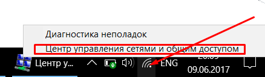
Выбираем нашу сеть
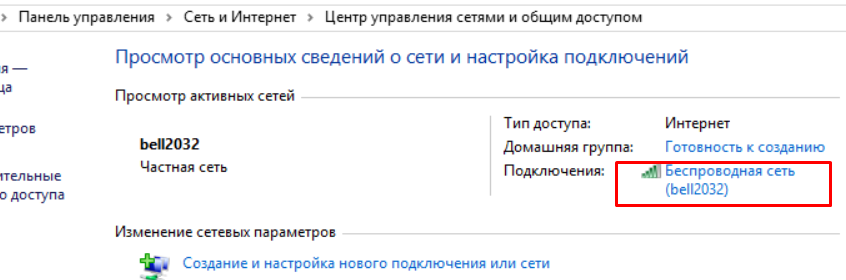
И нажимаем кнопку "Сведения"
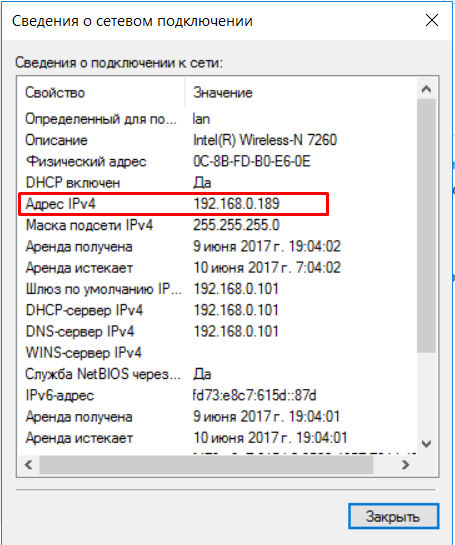
В моем случае адрес компьютера в локальной сети 192.168.0.189
Теперь возвращаемся в броузер и проверяем доступность страницы It Works по IP адресу http://192.168.0.189 (в вашем случае цифры будут отличаться)
Если снова увидели знакомую страницу It Works - все хорошо,
4. Проверяем доступность страницы с других компьютеров и настраиваем брандмауэр
Снова пробуем открыть знакомую нам страницу http://192.168.0.189 (у вас цифры другие) но уже с любого другого компьютера в локальной сети.
Если вместо знакомой страницы вы увидели "Не удается получить доступ к сайту" или аналогичное сообщение - выполним настроку брандмауэра. Для этого возвращаемся на тот компьютер, где установлен Apache, заходим в "Панель управления" - "Система и безопасность" - "Брандмауэр Windows" и в левой части экрана щелкаем на "Дополнительные параметры
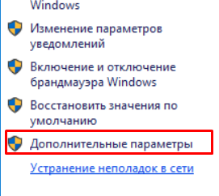
Кликаем на раздел "Правила для входящих подключений", затем в правой части окна "Создать правило"
Выбираем "Для порта" - Далее, Протокол TCP, Опреленные локальные порты: 80, Далее
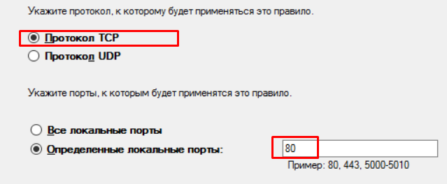
Устанавливаем "Разрешить подключение" - Далее,
Ставим все три галочки
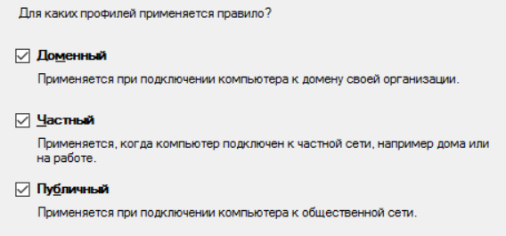
Указываем произвольное имя, например "Веб сервер 80 порт для 1С". Готово.
Снова идем на другие компьютеры и убеждаемся, что теперь по IP адресу http://192.168.0.189 броузер показывает знакомую нам страницу It Works
5. Публикуем нашу базу на веб сервере.
Открываем конфигуратор нашей базы (Запуск 1С обязательно от имени администратора)
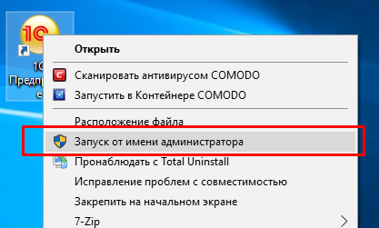
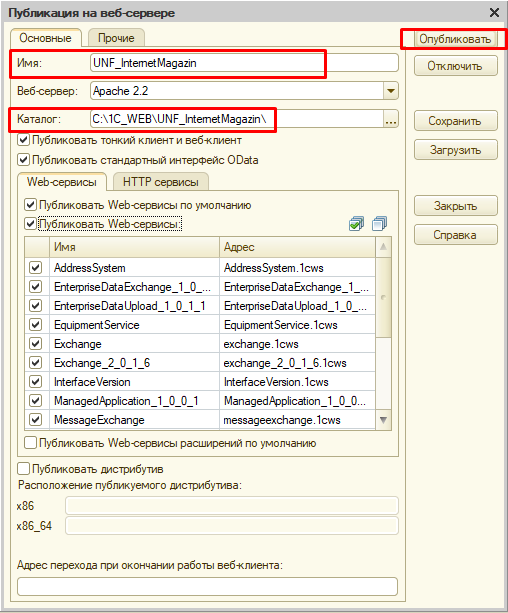
Переходим в Администрирование - "Публикация на веб-сервере"
Заполняем имя ЛАТИНСКИМИ БУКВАМИ БЕЗ ПРОБЕЛОВ (можно использовать подчеркивание)
Веб сервер Apache
Каталог - по сути произвольный каталог с файлами веб сервера для текущей базы. Желательно название каталога, что бы совпадало с названием базы (для простоты). Остальные флажки оставляем как на картинке. Смысл и необходимость каждого флажка можно будет разобрать позже.
Нажимаем "Опубликовать". Если при нажатии опубликовать вы видите сообщение
Невозможно записать c:\Program Files (x86)\Apache .... значит вы запустили 1С не от имени администратора. Закройте 1С и заново запустите (теперь "от имени администратора")
Вы должны увидеть сообщение "Публикация выполнена"
На вопрос "Перезапустить ли веб-сервер" - всегда соглашаемся.
Пробуем открыть в броузере нашу базу. С текущего компьютера (где установлен веб-сервер)
http://localhost/UNF_InternetMagazin/
И если все удачно - то с других компьютеров - http://192.168.0.189/UNF_InternetMagazin/